This getting started will show you how to create and use a simple MAD configuration for editing the properties of elements of an Ecore metamodel.
Create a new EMF Project : File > New > Project... > Empty EMF Project
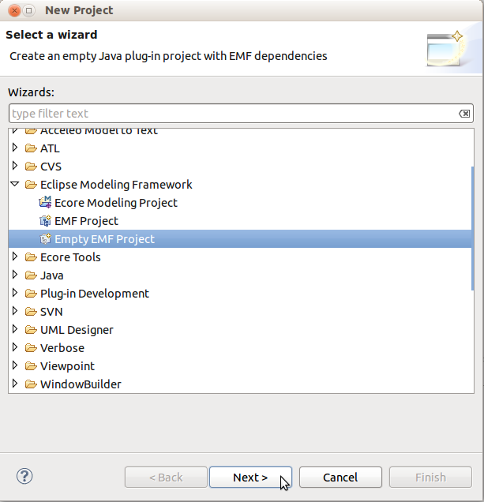
Create a new Ecore Model named Library.ecore inside this project : File > New > Other... > Ecore Model
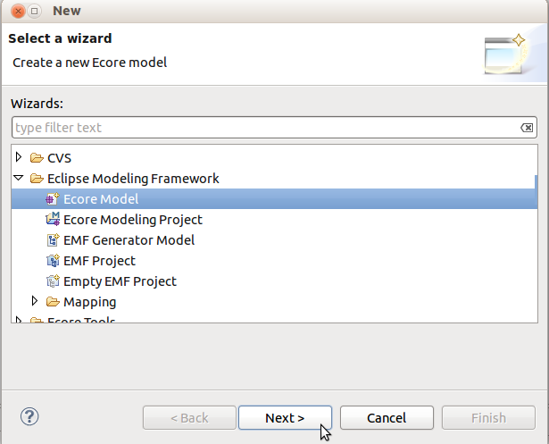
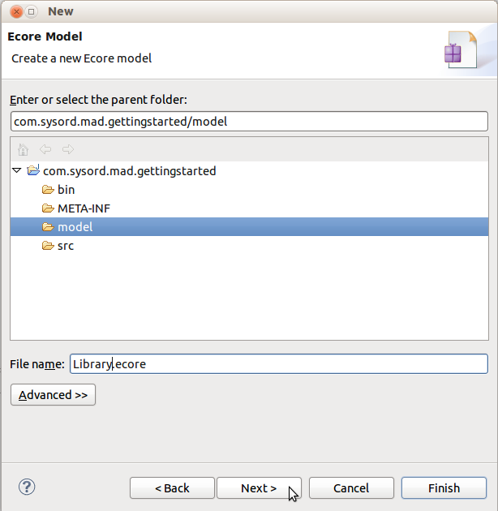
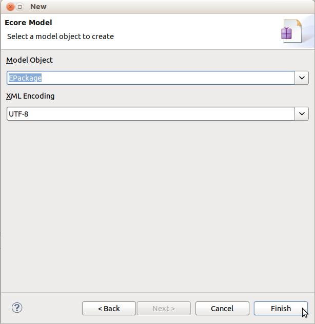
Create a new General Project named com.sysord.mad.gettingstarted.ecoreconfig : File > New > Project... > Project
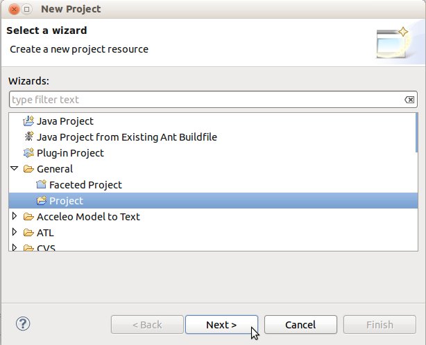
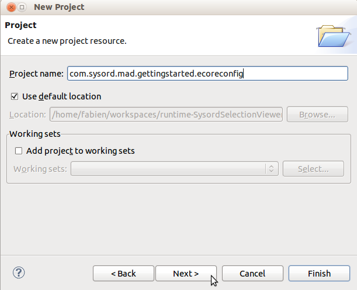
Create a new MAD Configuration file named gettingstarted.mad inside this project and choose the Ecore metamodel : File > New > Other... > MAD Configuration File
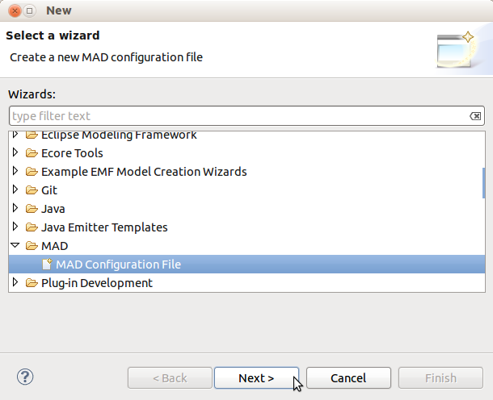
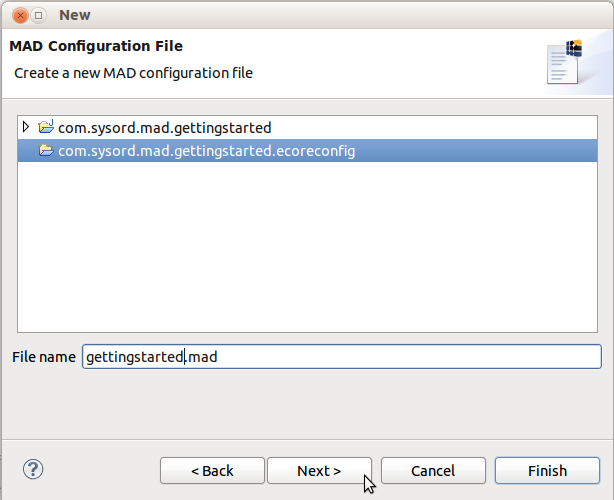
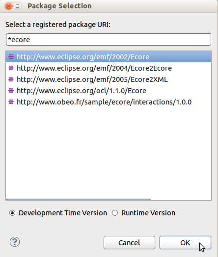
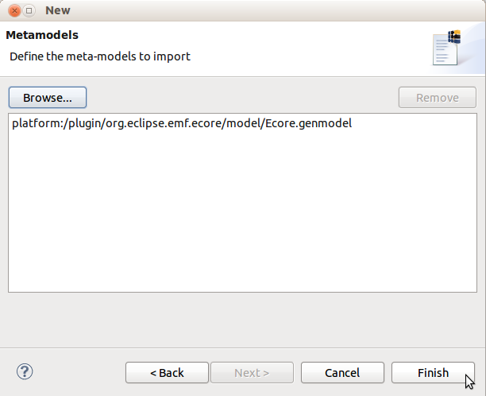
When a dialog asks you to add the Xtext nature to the project, answer Yes.
The MAD configuration have to be referenced in the preferences :
Window > Preferences > MAD
Click on Workspace..., choose the configuration
file previously created gettingstarted.mad, and Ok.
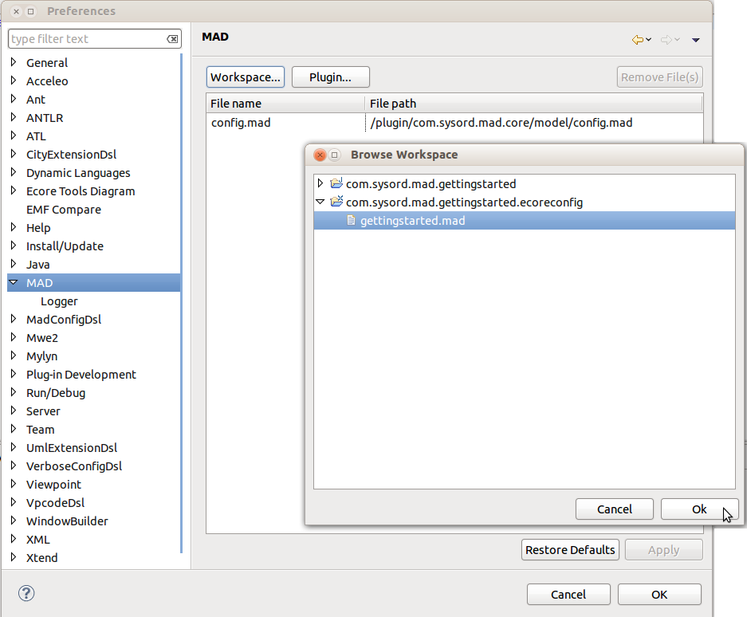
Now open the MAD View : Window > Show View > Other... > MAD View
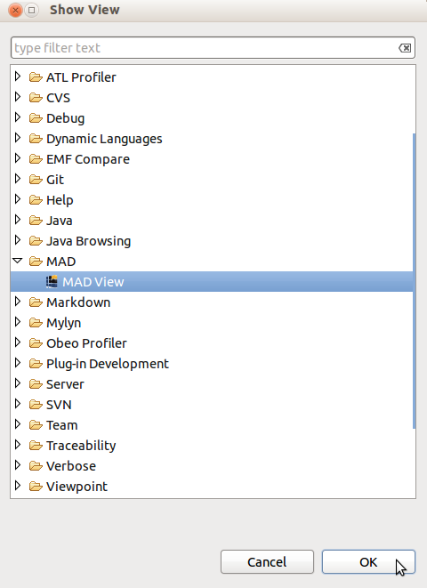
Now we have our environment prepared, we are going to create the MAD configuration for editing
the properties of the previously created Ecore metamodel.
So, open the Library.ecore metamodel and select the package.
As you can see nothing happens, it's normal,
we have not created any configuration for the EPackage element.
Open the gettingstarted.mad file and copy this code into it :
// Configuration for EPackage elements Configuration EPACKAGE for ecore.EPackage { template: widget: Name label: "Name" type: TEXT_WIDGET value: "name" }
This configuration will allow us to edit the name of the EPackage element. Click on the refresh button on the MAD View or select again the package in your metamodel. You should have now a form for editing the selected EPackage's name.
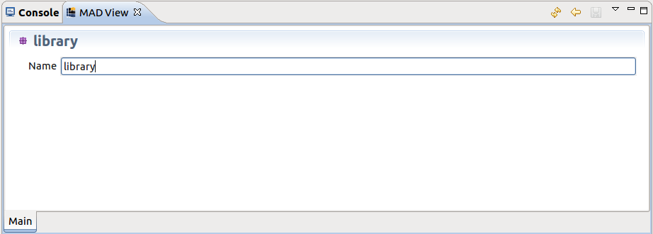
Set the name library (press Enter to validate or leave the textbox), the metamodel should be updated.
You can do the same for the NsPrefix and NsURI of the EPackage :
// Configuration for EPackage elements Configuration EPACKAGE for ecore.EPackage { template: widget: Name label: "Name" type: TEXT_WIDGET value: "name" widget: NsPrefix label: "Ns Prefix" type: TEXT_WIDGET value: "nsPrefix" widget: NsURI label: "Ns URI" type: TEXT_WIDGET value: "nsURI" }
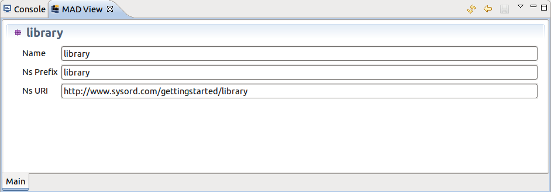
Create three new EClass in the library package :
Library, Book and Writer.
We would like to edit the name of these EClass. Easy you'll say,
we just have to add a widget
for the name in the EClass configuration. That's a solution, but not the ideal one.
In the Ecore metamodel all the elements with a name inherit
from the ENamedElement,
and MAD uses the metamodel inheritance to create the configurations.
We are going to create a configuration for the ENamedElement and all the
configurations of elements which inherit from ENamedElement will
display the name widget.
// Configuration for ENamedElement elements Configuration ENAMED_ELEMENT for ecore.ENamedElement { template: widget: Name label: "Name" type: TEXT_WIDGET value: "name" } // Configuration for EPackage elements Configuration EPACKAGE for ecore.EPackage { template: widget: NsPrefix label: "Ns Prefix" type: TEXT_WIDGET value: "nsPrefix" widget: NsURI label: "Ns URI" type: TEXT_WIDGET value: "nsURI" } // Configuration for EClass elements Configuration ECLASS for ecore.EClass { template: }
You certainly noticed that the EClass configuration is empty. Actually, MAD does not display a view for an element if there is no configuration for it, even if a configuration exists for a super-implementation like ENamedElement here.
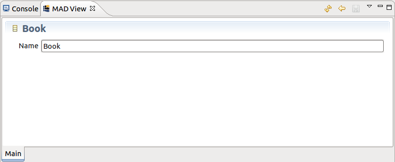
Add two references to the Library EClass : books and writers, and create an empty configuration for the EReference element as follow :
// Configuration for EReference elements Configuration EREFERENCE for ecore.EReference { template: }
This configuration allows us to edit the name of the reference. But we also want to edit
the type of the reference. To do it we have to add a widget for editing the eType
property of the reference.
The eType property is inherited from the ETypedElement.
This property can accept all the EClass defined in our metamodel.
To obtain these EClass
and propose them to the widget we can access to the root element of our metamodel
and get all the elements with the EClass type. To do this, there is an operation
included in the OCL evaluator called eAllContents(filter) usable on any
EObject.
// Configuration for ETypedElement elements Configuration ETYPED_ELEMENT for ecore.ETypedElement { template: widget: Type label: "Type" type: SINGLE_SELECT_WIDGET value: "eType" candidates: "$MODEL.eAllContents(EClass)" }
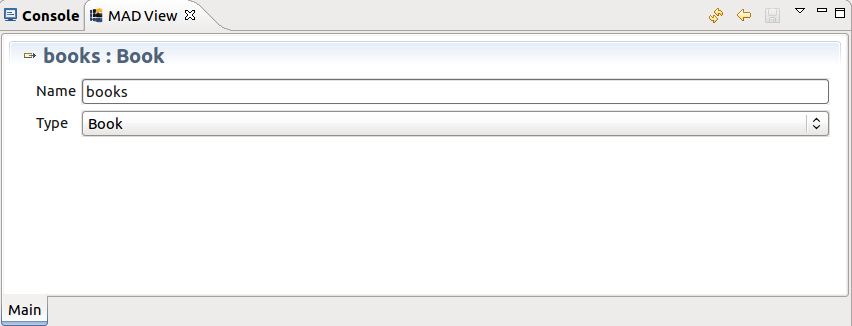
These two references should be set as containment, so add the following configuration to display a widget for editing the containment state of EReferences.
// Configuration for EReference elements Configuration EREFERENCE for ecore.EReference { template: widget: Containment label: "Containment" type: BOOL_WIDGET value: "containment" }
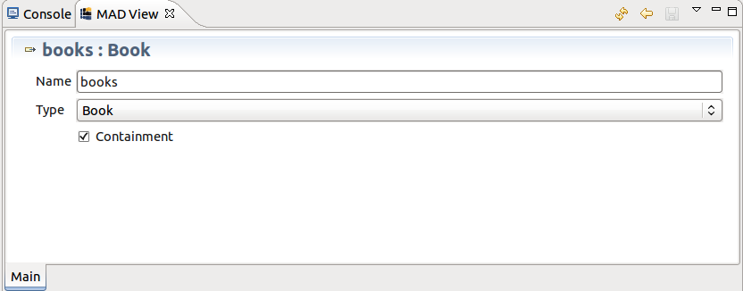
These two references should also have a multiplicity of 0..*. Add the following widgets into the ETypedElement configuration for editing the lower and upper bounds of a ETypedElement. (EReference inherits from ETypedElement)
// Configuration for ETypedElement elements Configuration ETYPED_ELEMENT for ecore.ETypedElement { template: widget: Type label: "Type" type: SINGLE_SELECT_WIDGET value: "eType" candidates: "$MODEL.eAllContents(EClass)" widget: LowerBound label: "Lower Bound" type: NUMBER_WIDGET value: "lowerBound" widget: UpperBound label: "Upper Bound" type: NUMBER_WIDGET value: "upperBound" }
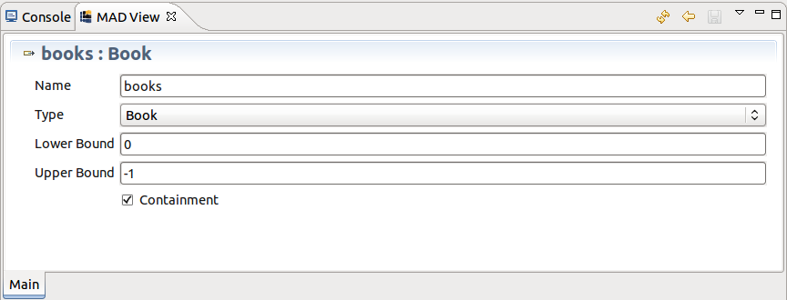
As you can see, the lower and upper bounds widgets are located before the containment widget. If you want to re-organize the display order you have to use the layout as follow :
// Configuration for EReference elements Configuration EREFERENCE for ecore.EReference { template: widget: Containment label: "Containment" type: BOOL_WIDGET value: "containment" layout: Name Type Containment LowerBound UpperBound }
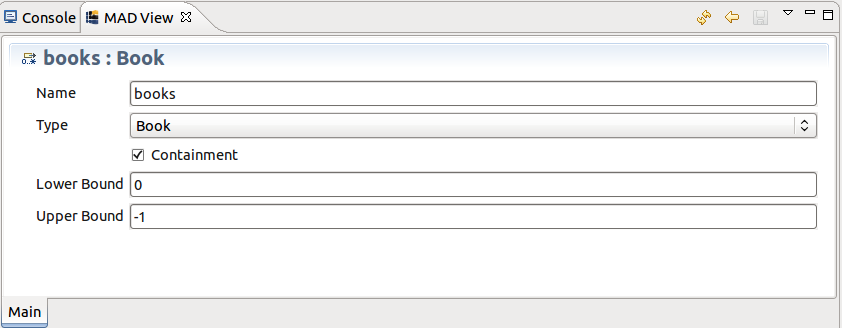
Add the attribute isbn to the Book EClass.
You can see that the proposed types are not what
it should be for attributes. MAD allows to override widgets configurations.
Create a widget Type for the EAttribute
configuration as follow :
// Configuration for EAttribute elements Configuration EATTRIBUTE for ecore.EAttribute { template: widget: Type label: "Type" type: SINGLE_SELECT_WIDGET value: "eType" candidates: "metamodelClassifiers(EDataType)" }
The query metamodelClassifiers is an operation defined in the OCL evaluator and returns all the classifiers of the metamodel of an EObject, Ecore metamodel here. This operation accepts an EClassifier as filter and for this query we want only EDataType classifiers.
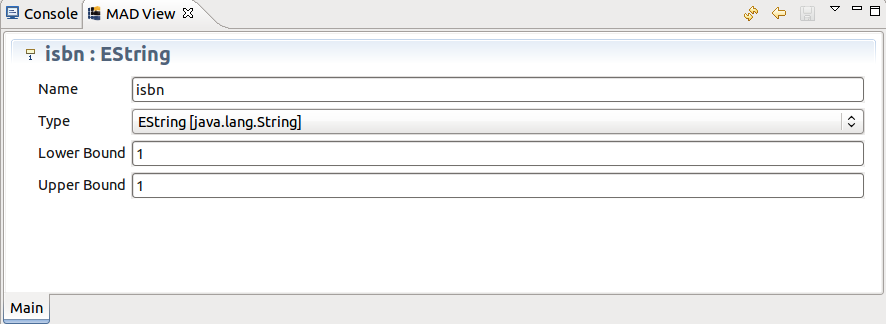
You can see the list of EDataType is quite large. It's possible to change
the graphical representation of the SINGLE_SELECT_WIDGET with an other one more
appropriate for displaying large lists of elements.
There is already a set of custom widgets in the base MAD configuration provided by the core
plugin. To use them you have to import this configuration :
import "platform:/plugin/com.sysord.mad.core/model/config.mad"
Now specify to the SINGLE_SELECT_WIDGET you want to use a popup list.
type: SINGLE_SELECT_WIDGET:POPUP_LIST
This will display a non editable textbox containing the selected value and a button which open a dialog with the list of the selectable elements.
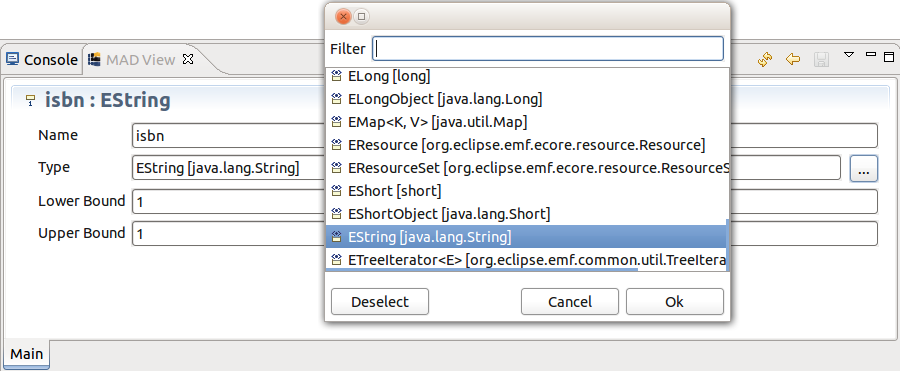
Add the references books and authors on
respectively Writer and Book. We would like
these references to be bidirectional so we need to edit the eOpposite
property.
Don't forget to add the Opposite widget in the layout, else the widget won't
be visible.
// Configuration for EReference elements Configuration EREFERENCE for ecore.EReference { template: widget: Containment label: "Containment" type: BOOL_WIDGET value: "containment" widget: Opposite label: "Opposite" type: SINGLE_SELECT_WIDGET value: "eOpposite" candidates: "eType.oclAsType(EClass).eAllReferences->select(eType = $CONTEXT.eContainer())" layout: Name Type Containment Opposite LowerBound UpperBound }
The query for obtaining the candidates uses the eType of the reference,
if this eType is not set, the query will fail.
To prevent that we add a visibility condition to the widget :
widget: Opposite label: "Opposite" type: SINGLE_SELECT_WIDGET visible when: "not eType.oclIsUndefined() and eType.oclIsKindOf(EClass)" value: "eOpposite" candidates: "eType.oclAsType(EClass).eAllReferences->select(eType = $CONTEXT.eContainer())"